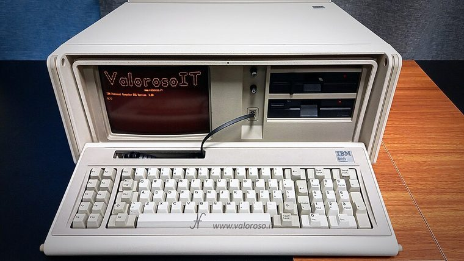
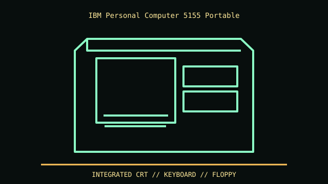

[ MODEL IDENTIFICATION // IBM 5155 PORTABLE PC (1984) ]
IBM Personal Computer 5155 Portable
Luggable, integrated 9-inch amber CRT and keyboard; references report about 20.5 × 14.6 × 8.5 in. Measure the specimen including handle/feet; enclosure is not a standardized tower.


REVISION CAVEAT: Confirm 5155 nameplate and board assembly. Service replacements or modified drive sets may differ from factory configuration.
Specifications & fit
| Catalog subcategory | Vintage desktop and integrated computer systems |
|---|---|
| Model / generation | IBM 5155 Portable PC (1984) |
| Dimensions / form factor / clearance | Luggable, integrated 9-inch amber CRT and keyboard; references report about 20.5 × 14.6 × 8.5 in. Measure the specimen including handle/feet; enclosure is not a standardized tower. |
| Drive bays | Two front 5.25-inch floppy drives in standard configuration. |
| Compatibility | Proprietary 5155 board, CRT, PSU and keyboard harness; PC/XT bus lineage does not make this an ATX case. |
| Revision identification | Confirm 5155 nameplate and board assembly. Service replacements or modified drive sets may differ from factory configuration. |
Compatibility & preservation notes
Proprietary 5155 board, CRT, PSU and keyboard harness; PC/XT bus lineage does not make this an ATX case.
Photograph CRT/PSU labels before service; specialist CRT and mains precautions apply. Preserve hinge, carry handle and internal harnesses.
- Record the complete model/SKU, serial/date label, board and bay/backplane identifiers, accessories and manual revision before disassembly.
- For integrated historical systems, follow the exact service manual for CRT, power and keyboard assemblies; do not assume a board or PSU swap is standardized.
- Keep original brackets, fasteners, trays, feet and front-panel parts labeled with the chassis. Do not force components into modified or incomplete specimens.
Manufacturer, archive & standards sources
- Internet Archive — IBM 5155/5160 Technical Reference (March 1986)Primary manufacturer or technical-reference source for this named model; use the exact SKU/document revision.
- Minus Zero Degrees — IBM 5155 documentation pointersAdditional manufacturer, archival, or dimensional reference. Options and specimen condition can change fit.
Approximate or convention-dependent dimensions are marked as such. Measure the individual unit for restoration, shipping and installation.